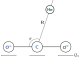

Language Fortran
SUBROUTINE CO2He3dPES(RR1,RR2,TH,V) Varibales
Input
RR1 Magnitude of the vector R pointing from center of mass of CO2 to He, in Angstrom;RR2 Q3 asymmetric stretching of CO2 molecule, defined as , in Angstrom;TH Angle θ between vector R and vector O(2)O(1), in Degree;Output
V Intermolecular interaction ΔV, in cm-1.Reference Hui Li, and Robert J. Le Roy, Phys. Chem. Chem. Phys., 10, 4128 (2008) doi:10.1039/B800718G
Language Fortran
SUBROUTINE COH2PES(XPHI,XTH1,XTH2,XR,V,iv3) Varibales
Input
XR Magnitude of the vector R pointing from center of mass of CO to center of mass of H2, in Angstrom;XPHI Dihedral angle φ formed by the two half-planes, in Degree;XTH1 Angle θ1 between vector R and vector OC, in Degree;XTH2 Angle θ2 between vector R and vector H(2)H(1), in Degree;iv3 Vibrational quantum number of CO, 0 for vibrational ground state and 1 for vibrational first excited state.Output
V Intermolecular interaction ΔV, in cm-1.Reference Hui Li, Xiao-Long Zhang, Robert J. Le Roy, and Pierre-Nicholas Roy, J. Chem. Phys., 139, 164315 (2013) doi:10.1063/1.4826595
Prof. Robert J. Le Roy from University of Waterloo
http://leroy.uwaterloo.ca/
Prof. Hui Li from Jilin University
http://huiligroup.org/
Copyright © 2017 Profs. Hui Li Research Group
This database is supported by
the National Natural Science Foundation of China,
National Key Research Development Program of China,
and the Natural Sciences and Engineering Council of Canada.
Proudly powered by Bootstrap